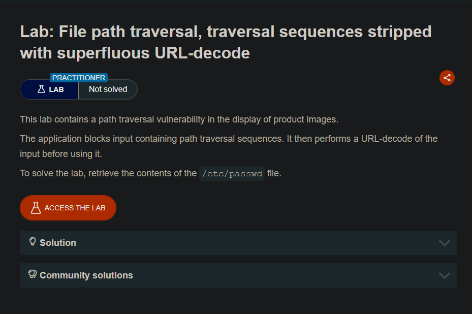
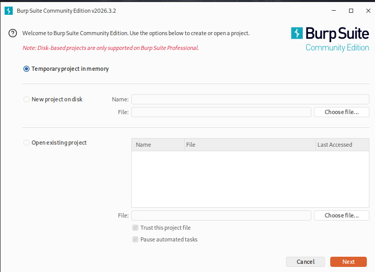
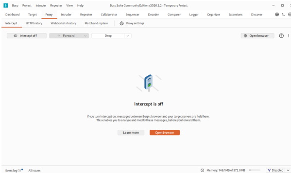
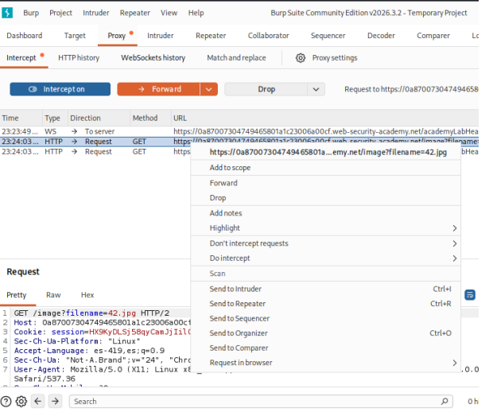
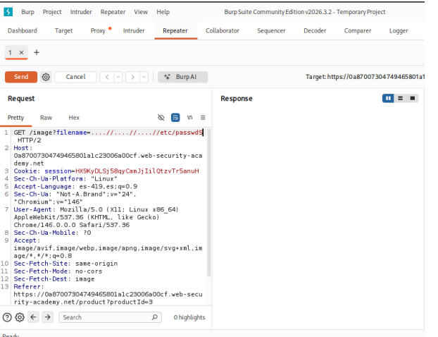
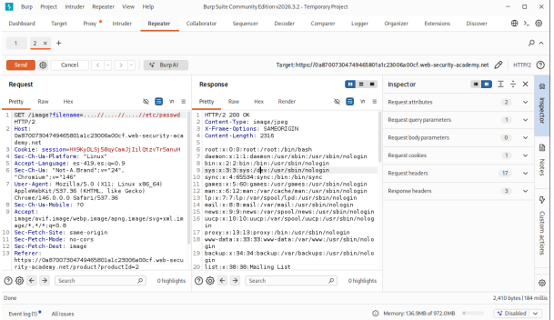
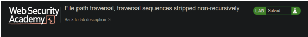

Lab 09: Traversal Stripped Non-Recursively
PortSwigger Web Security Academy | Herramienta: Burp Suite Community Edition
01_Nombre del laboratorio
File path traversal, traversal sequences stripped non-recursively
URL del laboratorio: https://portswigger.net/web-security/file-path-traversal/lab-sequences-stripped-non-recursively
Este laboratorio presenta un filtro de seguridad que intenta sanitizar la entrada eliminando las secuencias de recorrido (../). El atacante debe evadirlo aprovechando que la eliminación no se realiza de forma recursiva.

02_Nivel
Practitioner (Intermedio).
El reto sube de nivel al obligar al atacante a evadir una defensa activa implementada en el backend. Se requiere comprender el comportamiento de los filtros de reemplazo de cadenas (stripping) y explotar fallos en su lógica secuencial.
03_Tipo de explotación
File Path Traversal (también conocido como Directory Traversal o recorrido de directorios), evadiendo filtros de sanitización (Filter Bypass).
La vulnerabilidad ocurre cuando la aplicación implementa un filtro de seguridad defectuoso. El desarrollador utiliza una función de reemplazo de cadenas (como str.replace("../", "")) para eliminar las secuencias peligrosas de la entrada del usuario, pero solo lo ejecuta una vez por coincidencia (de forma secuencial y no recursiva).
Al no aplicar el filtro repetidamente hasta que no queden más secuencias, un atacante puede ofuscar el payload anidando caracteres (por ejemplo, ....//).
Cuando la aplicación procesa esta cadena, elimina el ../ interior, y los caracteres restantes se unen para formar un nuevo ../ válido que el sistema de archivos interpretará sin problemas.
Consecuencias: Las mismas que un Path Traversal clásico (lectura arbitraria de archivos sensibles, código fuente y credenciales), demostrando que las listas negras y las funciones de reemplazo simples son ineficaces para sanitizar rutas.
04_Objetivo del laboratorio
Demostrar la explotación de una vulnerabilidad de File Path Traversal evadiendo un filtro de sanitización no recursivo. Esto se logra inyectando secuencias de recorrido anidadas (....//) a través del parámetro filename de la petición HTTP que carga las imágenes de los productos, con el fin de generar secuencias válidas en el backend, leer el contenido del archivo /etc/passwd del servidor y obtener la confirmación de "Lab solved".
05_Explicación técnica de la vulnerabilidad
La aplicación web procesa la carga de imágenes mediante la siguiente petición:
Para protegerse de ataques de recorrido de rutas, el backend incluye una línea de código que busca activamente la subcadena ../ (y posiblemente ..\) y la reemplaza por un string vacío ("").
Fallo de lógica (No-Recursividad)
El error arquitectónico radica en que este mecanismo no es recursivo. Si la entrada del atacante es ....//, el filtro actúa de la siguiente manera:
- Analiza el string:
..+../+/ - Identifica la secuencia prohibida en el medio:
../ - La elimina.
- Concatena lo que queda: los primeros
..con la última/.
El resultado final enviado al sistema de archivos es: ../
Dado que el filtro ya terminó su ciclo de ejecución, esta nueva secuencia resultante nunca es evaluada ni eliminada, permitiendo al atacante retroceder directorios en el sistema de archivos del servidor hasta llegar a la raíz.
06_Procedimiento paso a paso
Paso 1 — Preparación del entorno
Se inicia Burp Suite Community Edition desde la máquina virtual, seleccionando en las configuraciones iniciales, Temporary project in memory y posteriormente Use Burp defaults.

Paso 2 — Interceptación y Navegación
Con Burp abierto en la pestaña Proxy → Intercept, se abre el navegador integrado y se accede a la URL del laboratorio. En Burp Suite se desactiva temporalmente el interceptor ("Intercept is off") para permitir la carga completa de la página de la tienda.

Paso 3 — Identificación de la petición objetivo
Se navega a la página de un producto (clic en "View details"), lo que dispara la petición que carga la imagen del producto.
Paso 4 — Preparación del Ataque en Repeater
Se busca en el historial (pestaña Proxy → HTTP history) la petición GET que carga la imagen y se selecciona con clic derecho → "Send to Repeater".

Paso 5 — Modificación del Payload (Ofuscación)
En la línea 1 del request, dentro de la pestaña Repeater, se modifica el valor del parámetro filename, inyectando el payload ofuscado (anidado) que evadirá el filtro no recursivo:

....//.Se presionó "Send".
Paso 6 — Análisis y Confirmación
En el panel Response se observa una respuesta HTTP/2 200 OK. Al examinar el cuerpo de la respuesta, se visualizará el contenido completo del archivo /etc/passwd del servidor, validando que el filtro eliminó el contenido interior pero dejó pasar nuestra secuencia armada:

/etc/passwd, confirmando el bypass del filtro.Esto confirma que la técnica de anidación evadió la medida de seguridad. Se regresa a la pestaña del laboratorio en el navegador y se recarga la página (F5).

07_Explicación del payload
Payload utilizado:
....//: Es una secuencia de salto de directorio ofuscada mediante anidación.
Estructura enviada: ..[../]/
- El filtro de la aplicación detecta y elimina estrictamente el patrón
../que se encuentra en el interior de los corchetes ilustrativos. - Una vez eliminado, los dos puntos iniciales (
..) se concatenan con la barra diagonal final (/), dando como resultado una secuencia limpia y funcional:../. - Al concatenar esta ofuscación tres veces (
....//....//....//), nos aseguramos de que, tras pasar por el filtro, el backend reciba../../../, lo cual es suficiente para salir de los directorios web y llegar a la raíz del sistema de archivos (/).
Finalmente, etc/passwd es la ruta del archivo objetivo que se anexa para realizar la lectura no autorizada de los usuarios del sistema.
08_Mitigación recomendada
- Evitar listas negras y funciones de reemplazo: Nunca se deben utilizar funciones como
replace()para intentar limpiar o sanitizar entradas maliciosas (listas negras). Los atacantes siempre encontrarán formas de evadirlas (anidación, codificación URL, byte nulo, etc.). - Uso de identificadores indirectos: Como estándar de oro, no pasar el input del usuario a las APIs del sistema de archivos. Referenciar los archivos mediante un hash o un ID de base de datos (por ejemplo,
id=71corresponde internamente a/var/www/images/producto71.jpg). - Validación con ruta canónica (Canonicalización): Si se debe procesar el nombre del archivo enviado por el usuario, la aplicación debe resolver la ruta absoluta real (usando APIs como
getCanonicalPath()orealpath()) que elimina cualquier secuencia matemática de directorios, y posteriormente verificar rigurosamente que esta ruta final comience con el directorio base permitido. - Lista blanca (Whitelist) estricta: Validar que el valor del parámetro filename solo contenga caracteres alfanuméricos válidos y una extensión permitida (ej. solo letras, números y
.png/.jpg), rechazando la solicitud por completo si contiene puntos consecutivos o barras diagonales. No intentar "arreglar" la cadena, simplemente rechazarla.
09_Conclusión
Este laboratorio destaca un principio clave en ciberseguridad: "Nunca trates de arreglar (sanitizar) entradas maliciosas; valídalas o recházalas". El intento de la aplicación de limpiar los caracteres prohibidos empleando una metodología de lista negra falló categóricamente al no considerar vectores de evasión como las secuencias anidadas, dejando expuesto el sistema a una explotación crítica.
[ Reporte técnico — Actividad 09: Traversal sequences stripped non-recursively ]